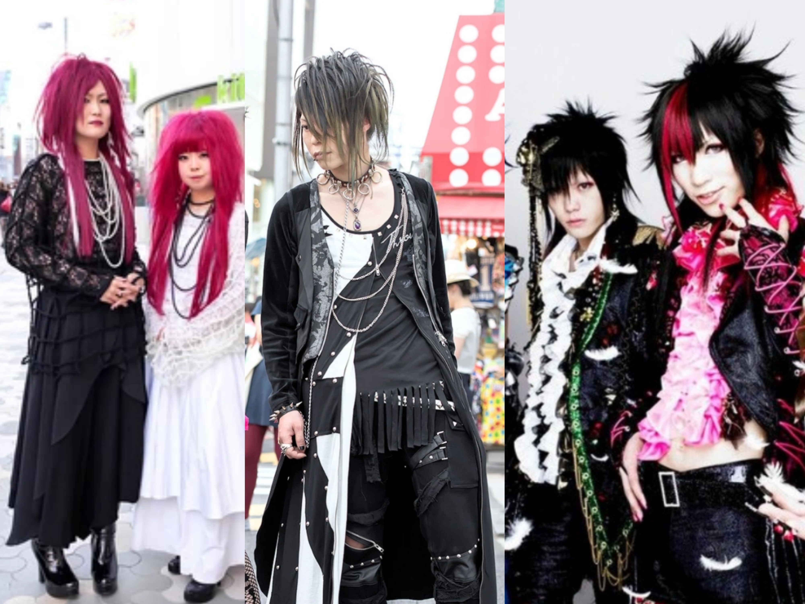
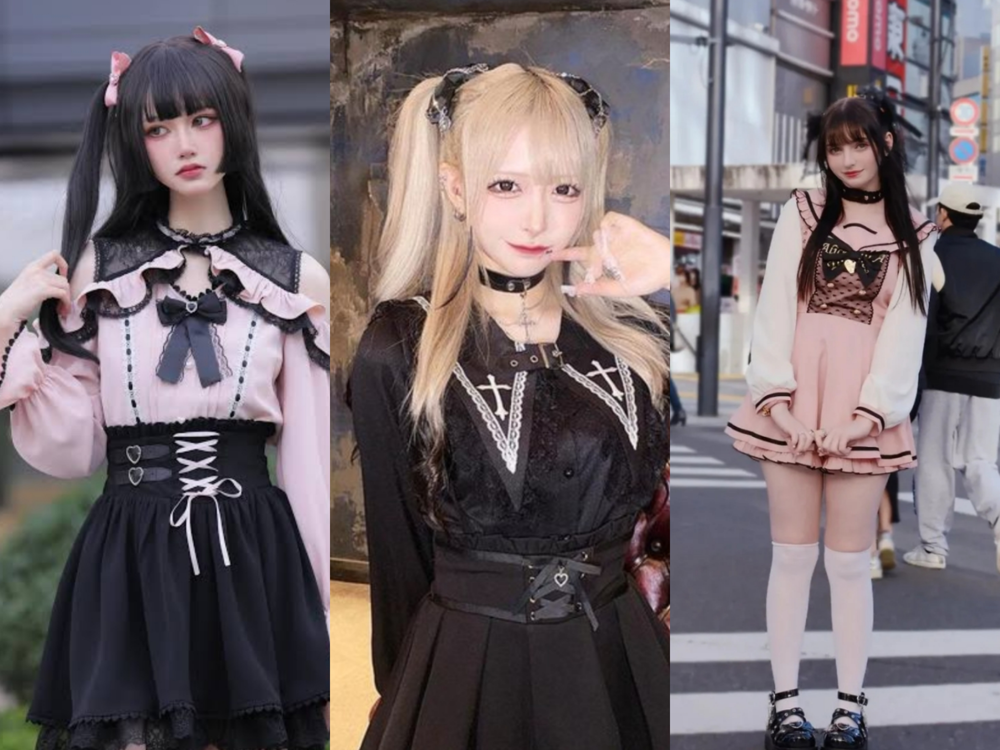
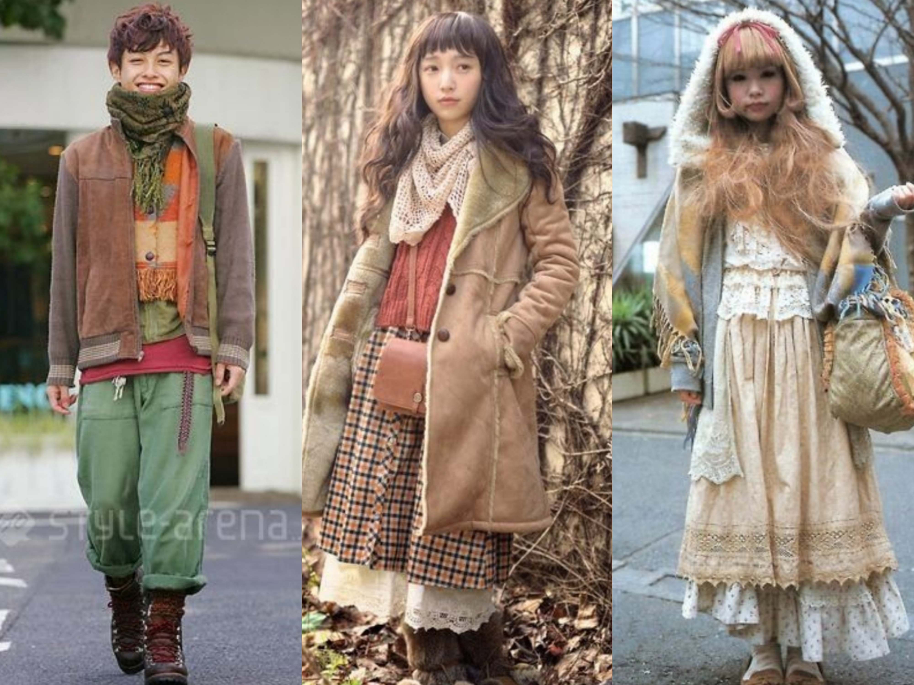

EGL
Lolita fashion, also known as EGL, is a Japanese street style subculture inspired by Victorian and Rococo-era clothing, focusing on modesty, elegance, and a distinct, voluminous, cupcake-like silhouette achieved via petticoats.

Visual Kei
Also known as Vkei fashion. Is a bold, theatrical, and gender-fluid style originating from Japanese rock music, characterized by dramatic, often androgynous looks, teased hair, and heavy makeup

Gyaru
Fashion subculture that peaked in the 90s/2000s, serving as a rebellious, bold alternative to traditional, modest beauty standards. Includes bleached/dyed hair, dramatic makeup, tanned skin, and glamorous, Y2K-inspired clothing.

Jirai Kei
Jirai Kei, literally meaning "landmine type", is a fashion subculture originating from Japan's Kabukichō and spread in popularity in the early 2020s, which incorporates dark and kawaii feminine fashion styles.

Decora
Vibrant, 1990s Harajuku-born Japanese street style defined by "deco-ration" (maximalist,, child-like accessorizing from head to toe). Key characteristics include bright, pastel, or neon colors, layers of hair clips, necklaces, bracelets, face stickers, band-aids, and character-themed clothing

Mori Kei
Japanese fashion, originating in the mid-2000s, centered on an ethereal, "forest dweller" aesthetic using, natural, comfortable, and layered clothing. Characterized by loose silhouettes, earthy tones, and natural fabrics, it evokes a cozy, vintage, and handmade feel.